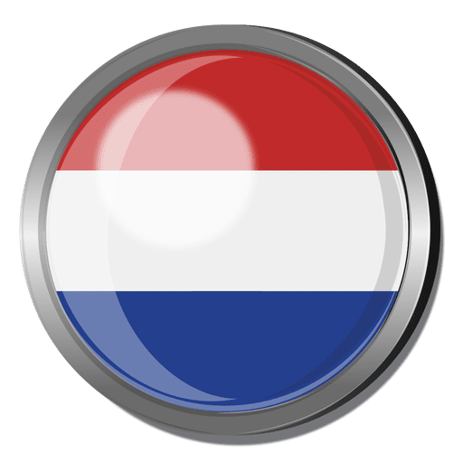

Contacto
-
 +34 678 543 342
+34 678 543 342 -
 @enrico_materrazi
@enrico_materrazi  Enrico Materrazi
Enrico Materrazi-
 enrico_mater@trevi.gmail.com
enrico_mater@trevi.gmail.com
Estudios Académicos
- Internado de Vienna 1987-1993
- Universidad de Oxford 1993- 1997
- Comisario de Trevi 1997- Actualmente
Experiencia
- Oficial inspector de Vienna
- Comisario principal de Vienna
- Comisario general inspector de Trevi
- Comisario general director de Trevi
- Comisario general comandante de Trevi
- Comisario general comandante de Roma
Idiomas

- Italiano nativo
-

- Inglés
-

- Español
- 
- Holandés